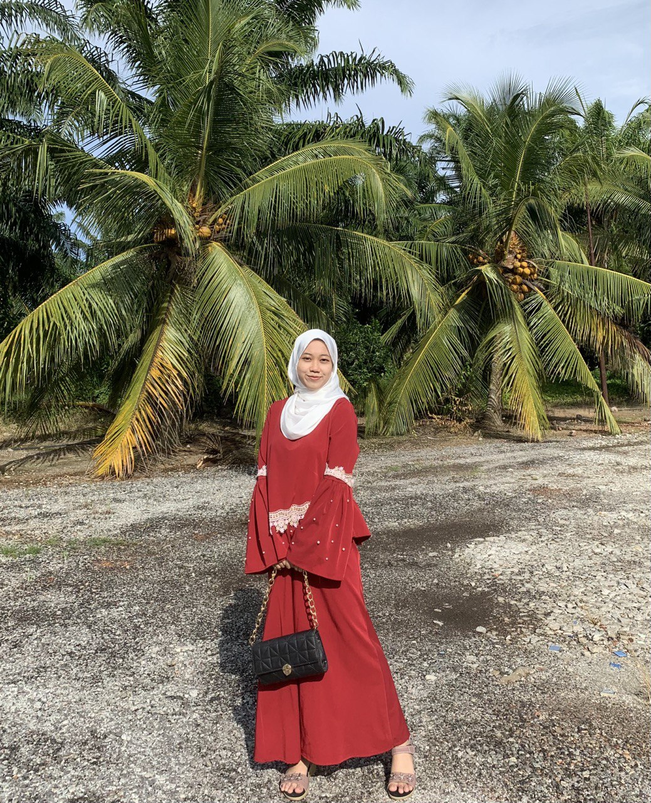

heheheeehheeh

Nice to meet u to all of my dear readers. I am Nur Anis Natasha bt Mohd Anuar, a typical year 3 student of Bachelor of Science in Human Development with Information Technology with Honours . I am currently a full time student at Universiti Putra Malaysia but also loves to spend her time working part time jobs to support herself throughout her youth year. Born and grow in Perak but residing in Selangor for the past 4 years due to commitment as a full time student independently. The youngest of the siblings but an independent who loves to take risk in doing everything she able to do. A small in size and a cutie in appearence, she is not scared to go out and travel alone due to her eagerness to see what the lifes has prepared for her.
Above parapgraph is a short introduction about me and below are some background information and contact information for future references.
| - | Info |
|---|---|
| Address | No 49, Persiaran Lada 11, Taman Changkat Lada Raya, 36800, Kg Gajah, Perak |
| Phone Number | 01139551058 |
| anisnatashamasrah@gmail.com | |
| Emergency contact | 0195796145 |
This section is specially done to show my hobby and what I love to do during my free time
Because I am a bookworm and a certified nerd. Reading books during my ample of extra times or when I do feel like I need to read has become my favourite since I was young. Starting from malay cliche romance novel to science-fic or any english novel. Paperback or e-book are all welcomed for me to read to increase my knowledge, vocabulary and creativity. Here are the link of books that i had read before and hope others can find it enjoyable to spend their time reading.Anis's book Recommendation.com
Watching Movies 🍿Watching movies has been my go to activity every single time since I find it enjoyable and I do like the fact that it help me escape from my reality. Marvels and superhero movies are my favourite and I would always spend more money to watch it in the cinema and as an early birds, cause who didn't like to brag abo0ut spoilers before everyone else right?.heheheheheehe. Other than, i'm just a typical ordinary girl who watch k-drama series and Netflix series. Ohh apparently, i do like dystopian kind of movies very much. Dystopian movie are thrilling and super good like The Divergent series and the Hunger Games. I love women who can stand on their one and brave enough to break the history.
This are some job that I have done during semester breaks or during weekends
These people are the people that has become my backbone throughtout my study years and i wish i could spend a lot of time with them cause it will never be boring !!